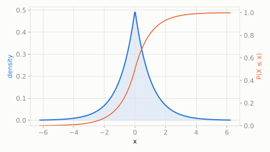

A pretty good dart player usually lands very close to the bullseye, but every so often badly misjudges and lands quite far off, in either direction.
What's the chance a dart lands more than 2 units from the bullseye?
scipy.stats.laplace
Two Exponential distributions glued back-to-back at the center -- a sharp peak with fatter tails than Normal. It models 'usually pretty close, but with more frequent bigger misses than a bell curve would predict', which is why it's the statistical backbone of robust (outlier-tolerant) methods and L1-style penalties.
| parameter | default used here | meaning |
|---|---|---|
loc | 0 | location (center) |
scale | 1 | spread (b) |
A pretty good dart player usually lands very close to the bullseye, but every so often badly misjudges and lands quite far off, in either direction.
What's the chance a dart lands more than 2 units from the bullseye?
scipy.statsimport scipy.stats as stats
import numpy as np
dist = stats.laplace(loc=0, scale=1)
print('P(|miss| > 2):', round(2 * dist.sf(2), 4))